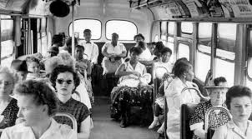
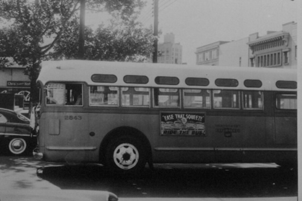

On December 1, 1955, Rosa Parks was commuting home on
Montgomery’s Cleveland Avenue bus from her job at a local
department store. She was seated in the front row of the “colored section.”
When the white seats filled, the driver, J. Fred Blake, asked Parks
and three others to vacate their seats. The other Black riders
complied, but Parks refused. She was arrested and fined $10,
plus $4 in court fees. This was not Parks’ first encounter with
Blake. In 1943, she had paid her fare at the front of a bus
he was driving, then exited so she could re-enter through the back door,
as required. Blake pulled away before she could re-board the bus.
The Women’s Political Council (WPC), a group of Black women working
for civil rights, began circulating flyers calling for a boycott of
the bus system on December 5, the day Parks would be tried in municipal
court. The boycott was organized by WPC President Jo Ann Robinson.
As news of the boycott spread, African American leaders across Montgomery
(Alabama’s capital city) began lending their support. Black ministers
announced the boycott in church on Sunday, December 4, and the Montgomery
Advertiser, a general-interest newspaper, published a front-page article
on the planned action. Approximately 40,000 Black bus riders—the majority
of the city’s bus riders—boycotted the system the next day, December 5.
That afternoon, Black leaders met to form the Montgomery Improvement
Association (MIA). Black leaders organized regular
mass meetings to keep African American residents mobilized around the boycott.
Following the advice of T. J. Jemison, who had organized a carpool during a
1953 bus boycott in Baton Rouge, the MIA developed an intricate carpool
system of about 300 cars. Robert Hughes and others from the Alabama Council
for Human Relations organized meetings between the MIA and city officials,
but no agreements were reached.

The group elected Martin Luther King, Jr., the
26-year-old-pastor of Montgomery’s Dexter Avenue Baptist Church, as its
president, and decided to continue the boycott until the city met its demands.
Initially, the demands did not include changing the segregation laws; rather,
the group demanded courtesy, the hiring of Black drivers, and a first-come,
first-seated policy, with whites entering and filling seats from the front
and African Americans from the rear. Ultimately, however, a group of five
Montgomery women, represented by attorney Fred D. Gray and the NAACP, sued
the city in U.S. District Court, seeking to have the busing segregation laws
totally invalidated. Although African Americans represented at least 75 percent
of Montgomery’s bus ridership, the city resisted complying with the protester’s
demands. To ensure the boycott could be sustained, Black leaders organized
carpools, and the city’s African American taxi drivers charged only 10 cents—the
same price as bus fare—for African American riders. Many Black residents chose
simply to walk to work or other destinations.
On 5 June 1956, the federal district court ruled in Browder v. Gayle that
bus segregation was unconstitutional, and in November 1956 the U.S. Supreme
Court affirmed Browder v. Gayle and struck down laws requiring segregated
seating on public buses. The court’s decision came the same day that King
and the MIA were in circuit court challenging an injunction against the MIA
carpools. Resolved not to end the boycott until the order to desegregate the
buses actually arrived in Montgomery, the MIA operated without the carpool
system for a month. The Supreme Court upheld the lower court’s ruling, and
on 20 December 1956 King called for the end of the boycott; the community agreed.